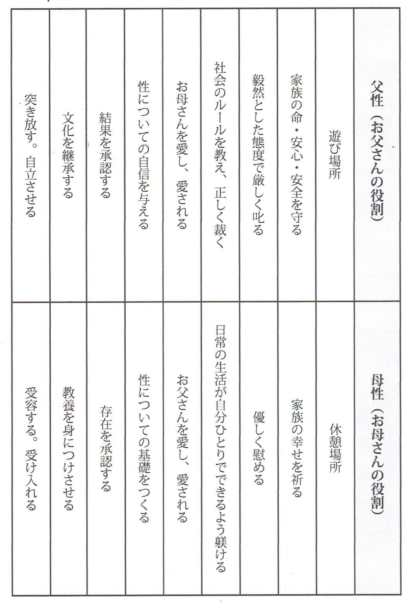

| アダルトチルドレンを克服したければ、父性を身につけなさい | |
| 大堀 亮造 | |
| (2018) | |
あなたは今までたくさんの本を読み、たくさんのセミナーや心理学の講座、カウンセリングを受けてきたことでしょう。
しかし、それで根本的にあなたの人生は変わったでしょうか？
・・・おそらく答えはＮＯだと思います。
カウンセリングやセラピーを受けたり、本を読んだり、人生経験を重ねたりすることで生きづらさは以前より楽になってきた。
でも、何かが足りない。
「いまだに自分に自信がない」
「いまだに本音を言えない」
「いまだに親に振り回されている」
「いまだに自分の意見がない」
「いまだにパートナーがいない」
「いまだにやりたいことがわからない」
なぜ、アダルトチルドレンが根本改善できないのか？その本当の理由をお伝えしますね。
おそらく、あなたが今まで受けてきたカウンセリングは女性カウンセラーばかりだったのではないでしょうか？
実は、女性カウンセラーでは対応できない分野、領域があります。
女性カウンセラーは母親代わりになってくれますから、癒されて心が楽にはなります。「死にたい」「消えたい」という無価値感からくる衝動などは改善できると思います。
しかし、女性カウンセラーではなかなか解決できない問題として次の項目があります。
・父親との関係で未完了な感情の問題（怒り、恨み、後悔、罪悪感、寂しさなど）
・男性との恋愛関係、結婚生活がうまくいかない
・上司との関係がうまくいかない。
・子育てで自分の子供に嫉妬してしまう
・お金を稼げない。お金を管理できない。
・やりたいことがわからない
・依存症が治らない
・主体的に生きることができない
・何をやっても自分に自信が持てない
これらの問題は母性の問題ではなく、父性の問題だったのです。
今までのあなたの人生には「父性のある男性」の存在がなかったのではないでしょうか？父親を筆頭に、学校の先生、習い事の先生、クラブ活動の顧問、上司などなど・・・頼りなくて無責任な男性ばかりだったかもしれません。
父性のない父親を見て育つと、「男性＝無責任」と脳がプログラムされてしまうので、父性のない男性とばかり関わることになってしまうのです。
実は、お父さんとの関係に起因した「父性の問題」がアダルトチルドレン改善の『最後の鍵』なのです。
「父性とは何なのか？」を知らないあなたには必ず本書がお役に立つと思います。
はじめまして。アダルトチルドレン専門カウンセラー、父性の専門家、大堀 亮造です。この度は本書をご購入いただき、誠にありがとうございます。
私はもともと操体法という民間療法で２００４年に独立開業しました。施術をしているうちにどうやら体からのアプローチだけでは解決しない問題が多いことに気づき、必然的にカウンセリングを学ぶようになりました。そして、操体法の施術をしながらカウンセリングも同時にやるようになっていきました。
あるとき、カウンセリングをしていたクライアントから、「大堀先生のコトは、勝手に「お父さん」とか、「大堀パパ」と思うコトにしました」というメッセージが届いたのです。そのとき、「そうか！お父さん役をすることを求められているのか！」と気づいたのです。私は三人娘の父親です。クライアントに対しても無意識に娘に接するように接していたのです。よくよく考えてみると、このカウンセリング業界でクライアントのお父さん役ができる人はほとんどいないという実情に気づいたのでした。
なぜなら、ほとんどのカウンセラーは元アダルトチルドレンですから、普通のお父さんについて体験していないし、父性については何も知らない状態なのです。また、男性のアダルトチルドレン専門カウンセラーは何人もいますが、「あなたのお父さん役をします！」と明言している人はいなかったのです。
そこで私は「アダルトチルドレンのお父さん役をすること」が天から与えられた使命＝天命なのだと自覚しました。クライアントのお父さん役に徹する父性重視のカウンセリングを実施したところ、アダルトチルドレンの問題を完全に卒業することができるということがわかってきたのです。
本書では前著「なぜ、あなたのアダルトチルドレンは改善できないのか？父親から愛されなかったあなたへ」（ギャラクシーブックス）http://ac-kokuhuku.jp/campaign/ では書ききれなかった「父性」についての新たな気づきを電子書籍として書かせていただきました。前著と併せて読んでいただけるとさらに理解が深まると思います。
父性についてさらに深く学びたい人のために、無料の動画セミナーをご用意しました。
登録するだけで以下の３つの特典をプレゼントさせていただきます。
特典１ 動画セミナー「アダルトチルドレンの人間関係がスッキリ理解できる！岡田式ＡＣ判別法」
特典２ 音声セミナー「アダルトチルドレンが父親との関係を改善するワーク」
特典３ ＰＤＦ「アダルトチルドレンに効果抜群！バッチフラワーレメディの選び方」
下記サイトから是非、無料動画セミナーにご登録くださいませ。
https://1lejend.com/stepmail/kd.php?no=IRnMxgyeylT
アダルトチルドレンとは、子どもにとって安心かつ安全な場所として機能しない家庭（機能不全家庭）で育ったために、幼少の頃のさまざまなトラウマ（心の傷）が原因となって、心や人間関係に障害をもつようになり、大人になっても生き辛さを感じている人々のことを指します。
語の発祥は「Adult Children of Alcoholics（アルコール依存症の親の元で育ち、成人した人々）」でしたが、この言葉は、１９７０年代、アメリカの社会福祉援助などケースワークの現場の人たちが、自分達の経験から得た知識により作り出したものであり、学術的な言葉ではありませんでした。その後、アメリカのソーシャルワーカー、クラウディア・ブラックの研究により、単にアルコール依存症の親の元で育った子どもだけでなく、機能不全家庭で育つ子どもが特徴的な行動、思考、認知を持つと指摘されました。この考えは、「Adult Children of Dysfunctional Family（子どもの成育に悪影響を与える親のもとで育ち、成長してもなお精神的影響を受けつづける人々）」というものであり、現在もっとも広く支持されているアダルトチルドレンの定義となっています。
アダルトチルドレンは、時に、「大人になりきれない子どもっぽい人たち」と解釈されることがありますが、それは大きな誤解です。アダルトチルドレンは、親が親として機能しない家庭環境に育つことで親子関係が逆転し、「子どもらしい」「無邪気な」子ども時代を過ごすことができず、むしろ、幼少の頃から大人として生きなければならなかった人たちのことなのです。親を親として信頼することができず、親に十分に甘えることができなかった人達のことだと捉えるとわかりやすいと思います。
「男性性」と「父性」は似ているようで実は違います。
父性を考える前に男性性について整理してみましょう。男性性を理解しやすくするために、あえて「男らしさ」と言い換えてみることにします。対比させるとわかりやすいで「女らしさ」と並べて書いてみます。
もちろん、時代の違い、歴史や文化の違いによって「男らしさ」「女らしさ」は変化するし、一概には言えない部分がありますが、一般的に日本の多くの人がそう認識しているであろうという前提で話を単純化して進めていきます。
実は、父性や母性というのは男性性や女性性を基礎・土台にして成長し、さらにその上に積み上がってできるものなのです。
ここでイメージしてみてください。男性性は強いけれど、父性はない。女性性はあるけれど、母性はないという人はどんな人でしょうか？
話を分かりやすくするために、男性性が強い人＝女性にもてる人。女性性が強い人＝男性にもてる人と定義してみます。すると、女性にモテモテで何人も彼女がいるけれど、結婚する気がまったくない自由奔放な強い男性は「父性がない」と言えます。
分かりやすく漫画のキャラクターで例えると、ゴルゴ１３のデューク東郷、ルパン三世、左手に銃を持つ男コブラ、シティーハンターの冴羽遼、映画で言うとパイレーツ・オブ・カリビアンのジャック・スパロー船長、００７のジェームスボンド、寅さんなどです。
また、男性にモテモテで何人も彼氏がいるけれど、結婚する気はないし、子供を産む気もない女性は「母性がない」と言えます。ルパン三世の峰不二子、タレントの叶姉妹などは典型的な例ではないでしょうか。

要するに、父性や母性というのは、結婚して子供ができたときに、お父さん、お母さんとして子供やパートナーから必要とされる機能・役割のことなのです。
生まれた瞬間から一緒に暮らす両親を観て育つことによって少しずつ「父性とは何か？（お父さんとして何をすればいいのか？）」「母性とは何か？（お母さんとして何をすればいいのか？）」を無意識に学んでいくのです。
普通の家庭ではお母さんの態度を観て母性を学び、父親の態度を観て父性を学びます。女の子は母親のマネをして育ち、母親になることに憧れ、男の子は父親のマネをし、父親になることに憧れるのが理想的な普通の家庭の姿といえるでしょう。
しかし、ほとんどの父親がサラリーマンである現在の日本の多くの家庭においては、父親の働く姿を直接観る機会はほとんどありません。高度成長期に入ってサラリーマン家庭が増えたことで、父親が一体どこで何をしていてどんな人なのかを知らないまま大人になってしまう人が急増してきたのです。その結果として父性不在の家庭が量産化されて大きな社会問題（草食系男子、肉食系女子、ニート、未婚の増加などなど）になっているのではないかと推測します。
ちなみに父性不在の父親にも２つの系統があります。１つ目は支配的、権威的、暴力を振るう、暴言を吐く、アルコール依存、ギャンブル依存、女遊びや浮気を繰り返す、酒癖が悪いなど昔のドラマに出てくるような「恐い系」ですね。２つ目はまったく存在感がない、何を考えているかわからない、頼りにならない、「弱い系」ですね。父親はただ家にいるだけでは十分に機能しているとはいえません。
家にいても母親からバカにされていたり、粗大ごみ扱いされていたりすれば子供にとって必要な父親の役割を果たしているとは言えないのです。
では、父親との関係は人生にどう影響するのでしょうか？簡単なマトリックスを作ったのでご覧ください。あなたはお父さんとの関係はどうだったでしょうか？
・関わる時間が長くて、父性があったという人は◎
・関わる時間は短かったけれど、父性はあったという人は〇
・関わる時間は長かったけれど、父性は無かったという人は△
・関わる時間は無く、父性も無かったという人は×
左側の父性が無かった人達は自分に自信がない状態のまま大人になってしまうので、何かしらの生きづらさを抱えてアダルトチルドレンになってしまうのです。
それでは、父親との関係は人生にどう影響するのでしょうか？
実は、父親との関係はそのまま、
・男性との関係
・上司との関係
・社会との関係
とリンクします。父親との関係が悪いと、女性はそのまま男性との関係が悪くなります。上司に逆らったり、素直に言うことを聞けない人になってしまいます。また、社会（会社や世の中）で公に認められることがなく、アウトローとして生きることになります。
父親との会話の質と量が、
・社会性（対外的コミュニケーション）
に影響します。父親との会話が無かった人は人前で自己紹介をしたり、自分をアピールするプレゼンテーションなどが苦手なはずです。また、決められた通りに原稿を読むことは何とかできますが、アドリブで話すことが苦手になってしまいます。
２人での会話ならばまだ何とかなりますが、３人以上になると会話についていけなくなり、黙ってしまう傾向があります。これは自分が言ったことが良いのか？悪いのか？相手が言ったことはどういうことなのか？頭の中でグルグルと考え過ぎてしまってパニック状態になるからです。嫌われたくない、失敗したくないという恐怖心でいっぱいいっぱいになってしまうのです。
父親のお金に対する考え方が
・経済状況
とリンクします。父親がお金を否定していたり、働いていなかったりすると、子供もお金に苦労する人生になります。父親から承認されずに大人になった人は自己イメージが低いのでお金をたくさん受け取ることに罪悪感が生じ、低価格での仕事しか受けることができなくなります。
父親が仕事だけはしっかりしていてお金には困っていなかった人、、お金だけは出してくれていたという人は自分自身も仕事はできるし、お金には困らないけれど、プライベートが無くなり、仕事ばかりする人生になってしまいます。
父親の仕事に対する考え方が
・就職活動・仕事のやる気
・仕事での成功や出世
・人生のミッション（天命）
に影響してしまいます。父親が働くことに否定的で、イヤイヤ働いていた場合、何のために働くのか？がわからないので自分もニートになるか、反面教師としてめちゃめちゃ働く人になるか？の両極端のどちらかに振れる可能性が高いです。
父親が成功している人を否定していた場合、成功者になることが非常に難しくなります。父親の言葉を受けて「成功してはいけない」という暗示が潜在意識に入ってしまうからです。
実は、父親というのは社会の入り口なのです。入り口を突破できないと人生が先に進まないのです。
前著「なぜ、あなたのアダルトチルドレンは改善できないのか？父親から愛されなかったあなたへ」（ギャラクシーブックス）http://ac-kokuhuku.jp/campaign/ の中で詳しく解説していますが、父親の９つの役割は以下の通りです。
１． 体を使って子供とたくさん遊ぶ
父親が子供とスキンシップをたくさんしているとこの世界は楽しいところだと思えるし、自分の存在が承認されるので安心します。
２． 家族の安心と安全を守る
何か危険が迫ったときや、非常事態のときに父親が家にいて守ってくれることで、この世界は安心できるところなのだという前提で過ごせるようになります。
３． 最高責任者として責任をとる
父親が最終的な意思決定権を持ち、家族で何をするか？などを決める姿を見ることで、組織の中で上司が決めたことに素直に従える人になれます。また、自分がリーダーや責任者になることに抵抗が無くなります。
４． ルールを教え、善悪の基準を与える
父親自らが世の中のルールを守り、それを子供に教えることで、善悪の基準、考え方の基準、社会に出ても困らない、いわゆる一般常識が身につきます。
５． 外の世界へ連れ出す
日常から非日常に連れ出して色んな世界を体験させることで、世界は広いということがわかります。また、母親から切り離すことができます。
６． お母さんのことを愛する姿を見せる
父親がパートナーである母親と仲良くする姿を見せることで男女の健全な関係を学び、結婚することに対する憧れが生じます。。
７． 自信を与える
父親が「かわいいね」と褒めることで女性としての自信、「かっこいいね」「強いね」と褒めることで男性としての自信ができます。また子供が努力をして何かしらの成果、結果を出したときに父親がしっかり褒めることで本当の自信を持つことができます。
８． 文化を継承する
言葉の定義、意味や日本の歴史、世界の歴史、地域での伝統行事などを父親が教え伝えることで自分自身のルーツを知ることができて、アイデンティティ（自分が何者であるのか？）の確立に役立ちます。
９． 生き方を示し、自立させる
父親が自分の価値観、世界観を自らの体験談をもって語ることで雛形としての生き方のソフトが子供にインストールされます。それをもとにして親の価値観を超えることで（反抗期を経る）大人として精神的に自立することができます。
さて、あなたのお父さんは家庭の中で９つの役割を果たしてくれていたでしょうか？これら９つの役割を果たしている父親は父性があるお父さんだと言えるでしょう。
もちろん、完璧な父親なんていませんから、すべての面で満点のお父さんではなかったと思います。これからお父さんになる人は是非とも参考にしていただければと思います。
では、父親という立場・役割に限定せずに、広い意味において「父性がある」とは一体どういうことなのでしょうか？
「父性がある」ということを簡単にまとめると、
・組織のリーダー、責任者として責任をとる能力（リーダーシップ）
・指導者として指導する能力
があるということなのです。
たとえば、
・父親
・学級委員長
・クラブ活動のキャプテン
・社長
・市長や知事
・国会議員
というように組織・グループのリーダーになると、その構成員から「もっとしっかりしてください」「ビジョンを示してください」「叱ってやってください」「仕切ってください」「指示を出してください」「決めてください」などと父性を要求されるのです。
では、父性がないとどうなってしまうのでしょうか？
もし、組織の中に父性のあるリーダーがいなければどうなるでしょうか？
無責任、無秩序で不安定な状態となり、物事がうまくいかなくなり、組織が崩壊してしまいます。昨今の大企業の不祥事、日大アメフトの監督の問題などが典型的な事例でしょう。
それでは、人生のリーダーであるあなた自身に父性が無ければどうなるでしょうか？
無責任、無秩序で不安定な状態となり、物事がうまくいかず、、何をやっても自信が持てず、人生が崩壊してしまいます。
具体的に言うと、父性がないと、日常生活で次のようなことで困ります。
・自分のことを大切にしたり、守ることができない
・自分の意見が言えない。（そもそも自分の意見がない。わからない）
・ＮＯと断ることができない
・女性（男性）としての自信がもてない
・主体的に生きることができない。周りに流されてしまう。
・本当にやりたいことがわからない
・決断することが恐い
・社会で認められるという許可が下りない
・責任者、リーダーになれない（親になったり、上司になったりできない）
いかがでしょうか？
父性がないことを痛感している人でも大丈夫です。なぜなら、父性は後天的に身に着けることができるものであり、今からでも十分に間に合うからです。
父性を漢字一文字で表現するとどんな文字になるでしょうか？
それは・・・「徳」です。
徳とは、辞書によると、
１．身についた品性。社会的に価値のある性質。善や正義にしたがう人格的能力
２．広く他に影響を及ぼす望ましい態度。のり。おしえる。めぐむ
とあります。
いわゆる人徳＝父性なのです。日本人に馴染みのある五常（ごじょう）または五徳（ごとく）は、儒教で説く５つの徳目です。すなわち、仁・義・礼・智・信を指します。
仁・・・人を思いやること。人を愛すること。優しさ
義・・・私利私欲にとらわれず、やるべきことをやること。正義。
礼・・・礼儀作法を身に着けていること
智・・・物事の道理をよく知っていること。知識が豊富なこと
信・・・約束を守ること。誠実であること
これらの徳目がある人物は、父性がある人と言って間違いないでしょう。逆に言えば、人を思いやることができず、自分の利益だけを考えていて、慇懃無礼で、物事の道理を知らず、約束を守らない不誠実な人は父性がないのです。
人間は自分の脳に情報の無いものは認識できないので、まずは知識として「父性」の情報を脳に入れることです。
そもそも戦後の日本は全体的に父性不在の社会になってしまっています。父性について教えてくれる人はほとんどいませんので、自ら積極的に父性について学ぶしかありません。以下に紹介する映画、ドラマなどを是非とも参考にしてください。
アダルトチルドレンのクライアントには、お父さんの役割をわかりやすく描いた映画として映画「バケモノの子」を観ることを強くおすすめしています。
両親が離婚して母親が亡くなり、９歳で家出をした一人ぼっちの少年＝九太が、腕っぷしだけは強いけれど人望がなくて弟子をとったことのない一匹狼のバケモノ＝熊徹に弟子入りして、喧嘩しながらも一人前の男として、互いに成長する感動のストーリーです。
以下、カウンセリングを受けてくれているお客様から感想をいただきました。
●Ｋさん
「人が生きていくには、ひとつ芯みたいなものが必要だと思うのですが（作品の中では、「胸の中の剣」と呼んでいました）、それは本当の親からでなくてももらえるものなんだと思いました。映画の中では、親代わりの存在が子どもの胸の中の剣になるのですが、私は、大堀先生だったり、ほかの人だったり、あるいは映画や本から学ぶものだったり、そういうものを自分の胸の中の剣にして、これからまっすぐ生きていきたい、と、そんなことを考えました。」
●Ｋさん
「バケモノの子を主人と見てきました。感想です！大堀先生が何をいいたかったのか、この映画から私は何を受け取るのか、ばかりを考えた２時間でした。一郎彦が最初に出た時点で、ストーリーが全て読めて、「あ、この子、人間だ。てことは、...」と一郎彦に感情移入しました。一郎彦の顔を隠していて、自分を知られることに対しての恐怖だったり、それを受容できない自分だったり、また、弟が素直すぎる...。すごく気持ちがわかるというか、反対に九太は顔を隠すことなく堂々と自我を確立していく...私は映画の初めのシーンでも九太が、誰にどう思われようが、自分の気持ちをハッキリ言える姿勢に、羨ましく、こうなりたい！思う反面、嫉妬しました。見捨てられ不安がないというか。なんだろう？いいなぁ！私もこれくらい言ってみたいなー！とばかり、思っていました。でも、九太にも敵の一郎彦と同じ闇を抱えているってことだったんですよね。自分を写す鏡というか。でもやっぱり九太、羨ましかったな！私もこうなりたいと思いました。やっぱり、一郎彦目線になっちゃいます。最後の楓の、みんなそれぞれ闇は持ってる！みたいな発言にも、九太の闇の気持ちは、受け止めたくせに、なんでやねん！！とか思ったり。 恋心だから仕方ないか？・人生の意味は自分で見つける・居場所は自分でつくる・心の剣とてもいいイメージを持てました。主人もいろいろと感慨深いものを感じたようです。映画も何年ぶりに見たかな？という感じでした。主人と映画見たことあるのかすら、覚えていません。たまには二人で映画を見るのもいい夫婦の時間でした(笑)」
●Ｓさん
「大堀先生、バケモノの子観ました。すごく、考えさせられる映画で、久しぶりに見入ってしまいました。みんな、闇を抱えているということ。そして、それと戦っているということ。今の私だと思いました。今まで、闇の部分はふせておきたいし、封印しなさいと言われたこともありますし、よい部分しかだしちゃけないと思ってましたが、何かあると我慢の限界でキレる。 一郎彦と同じと思ってしまいました。やっぱり、親から本当の愛情ってものは、いただいてないのかなと心のどこかで、感じてしまいました。ただ、熊徹のように師匠と呼べる人との出逢いがあれば、人は変われる。私は今まで、そういう出逢いが少なかっただけなんだ、とも思いました。自立ってなんだろう？大人になるってなんだろう？疑問でしたが、父性がないと無理と知り、安心できた部分もありました。無理矢理、頑張って、背伸びしていた自分がいたので（笑）父性って本当に大切なんだと思いました。私にとって、大堀先生との出逢いは、大きいと感じています。一歩踏み出せた自分も褒めてあげようと思います。」
●Ｓさん
「さて、『バケモノの子』ですが、今回は渋谷で観て来ました。その日の都合でたまたま渋谷だったのですが、作品の舞台半分が渋谷でびっくりしました。まず、９歳の九太が家を飛び出して、「みんな大嫌いだ」と言っていた所で泣きましたが、そこで、私は母の事は大好きで少しも疑う事は無いのに、母の事も九太から見た「大嫌いな大人」に入っている感覚がしました。熊徹に対しては、「こんなのが大人じゃいけない」「たまたま少し強くても、皆に好かれようとしない人は役に立たない 迷惑掛けるだけ」という印象でした。我流なんて傲りで熊徹も、あの猪のお父さんみたいにならないと、と。でも、観終わってみて、私の胸の剣のイメージが熊徹になってしまっていて、そこはまだ整理出来ていない所です。一郎彦にも自分が少し重なりました。お父さんに憧れているけど、とても追い付かない。自分は一応、お父さんの子供だけど、ちがう(出来損ない)。一郎彦がものすごい渋谷を破壊したのに、軽症者しか出なかったというニュースを見てほっとしました。私は、勿論、お父さんにもお金をかけて育てて貰えたので、恩を感じていますが、なかなか胸の剣にはならないので、周りの方々の「綺麗な心」をあつめて、剣に閉じ込めようとイメージしました。 本当にすばらしい映画でした。熊徹とチコのグッズが欲しくて堪らないです 笑」
●Ｓさん
「今日、「バケモノの子」を観てきて、すごく勇気をもらえました！前に、大堀先生に、芸能人でも何でも理想のお父さん像はいる？って聞かれたことがあったのですけど、その時は全然思いつかなくて、そんな事を考えた事もなくって・・・でも今は理想のお父さんは、断トツで熊徹になりました！「実の親じゃなくても、分かってくれる人が1人でもいれば生きていける。」って、大堀先生がいつも言われている事がこうゆう事なんだって、映画を観ながら感じました。 猪王山も立派なお父さんだったけど、口が悪くて、がさつで、すぐムキになって子供っぽい所もあるけど、熊徹みたいな人に育てられたら、武道だけじゃなくて精神的にもものすごく強くなるし、毎日楽しいだろうなって思いました。 ２人の遠慮しない、思ったことをズケズケ言い合う関係も、うらやましかったです。あと私にはチコが、死んだお母さんに思えて、九太は1人ぼっちだって言ってたけど、そう思ってるのは自分だけで、たくさんの人に見守られて生きてるんだなって、何だか 嬉しくなりました。普段は素直じゃないのに、本当に助けが必要な時には迷うことがなくて、「未熟で半端者だけど、あいつの役にたってやるんだ」って熊徹が言ってたのが印象的でした。 闇はみんな持っているけど、それに飲み込まれるかどうかは、その人次第だなって感じて、それをはね返せるように私も強くなりたいと思いました。 映画、観に行って良かったです。」
●Ｙさん
「バケモノの子を見てきました！劣等感や嫉妬を克服するには自己信頼が必要ですが、まずは父親的存在が認めてあげないと自信が持てないのだなという事がよくわかりました。アダルトチルドレンは一郎彦に感情移入するのではないかと思います。また、強さについて賢者に尋ねるシーンで賢者が「幻は現実よりも真実になる時がある」という内容の事を言っていたと思うのですが、まさに、カウンセリングのイメージ療法？やフィクションで父性を補っている事が真実になるのかなと思いました。」
●Ｙさん
「最後は泣きっぱなしでした。あんな強くて楽しくて、いざという時に力になってくれるお父さん。本当に羨ましいって思いました。ワーワー言ってぶつかっても受け止めてくれる。ひたすら羨ましかったです。私は、ずっと、泣いてわめいて大騒ぎして大人を困らせるようなことはしませんでした。普通の顔して、全てを諦めて。でも心の底には、出してはいけないと思っている怒りがあるのかな......心の中の剣が、私の中にもしっかり出来上がるように頑張ります。」
この映画のテーマは
「父親は子供に対してどうあるべきか？」
「本当の強さとは何か？」
カウンセラー的に観ると、「心に闇を抱えているアダルトチルドレンをどう改善するか？」ということです。
以下、バケモノの子を観て私が感じたこと、気づいたことです。
・大人になるためには父性（生き方を指南してくれる師匠を持つこと）が重要
・生みの親より育ての親
・父親には力がないといけない。強くないといけない。世の中で生きていけるように子供に与える武器（勇気、知恵）がないといけない。
・人生の意味は自分で見つけるもの
・自分の居場所は自分でつくるしかない
・親は子供に過去の自分を投影する。自分が子供のときにしてほしかったことを子供にすることになる
・真似をする＝相手に父性を感じているということ
・父親とは体を使ったコミュニケーションが必要
・子供を育てることで親である自分自身が育つ
・インナーチャイルドが抱えた心の闇は、父性を感じる人と深く関わることで埋めることができる
・嫌な奴（敵）だと思う人がいたら、自分の中にもその人と同じ心の闇がある
・「心の闇を抱えて苦しんで生きている人は自分一人ではない」というメッセージ
・多くの人に支えられて生かされてきたことに感謝できるようになれば大人
・胸の中の剣＝勇敢さ・強さ・父性の象徴。それがあると自信・自己信頼につながる
・自分のために父親が本気で関わってくれたという実感が「胸の中の剣」となる
・本当の強さとは、愛する者を守るために自らの命を投げ出すことに何の迷いもないこと
・熊鉄の在り方＝日本の武士道の在り方、今の日本社会が失っているのは熊鉄のような父性
立派過ぎる父親（猪王山）をもった一朗彦は反抗期がないまま、自分の苦しみを表に出せずに大人になり、心の闇に飲み込まれてしまいます。医者や警察官や校長先生や政治家の子供として生まれ、苦しむアダルトチルドレンを連想させます。
一方、だらしない父親（熊徹）をもった九太は、熊徹と激しくぶつかりあいます。反抗期を体験することで立派な大人になり、自立することができました。やはり、父親と対決して乗り越えるという体験が男の子が大人の男（漢）になるには必要なのです。
父親として子供とどう関わるのか？という視点で観ると考えさせられる深い映画でした。この映画はお父さんになった人、これからお父さんになる人、アダルトチルドレンの人には特におすすめです。私のカウンセリングでの役割はお父さん役を演じることにより、「クライアントの胸の中の剣になること」なのだと自覚しました。
あなたはご存知だったでしょうか？「スターウォーズ」はアダルトチルドレンのストーリーだということを。
これはスターウォーズに限りませんが、片親だったり、両親がいない、本当の両親がわからない、という不幸な設定からのスタートでないと、心の葛藤や欠乏が描けないのでストーリーとして面白くなく、共感を呼ばないからでしょう。
スターウォーズの旧三部作シリーズ「エピソード４／新たなる希望」「エピソード５／帝国の逆襲」「エピソード６／ジェダイの帰還」の主人公ルーク・スカイウォーカーにはお父さんがいません。「お父さんは死んだ」と言われて育てられた母子家庭で育った青年です。
そして、師匠（メンター）となるオビワン・ケノービと出会い、お父さんが勇敢なジェダイの騎士だったことを知らされます。自分も父と同じジェダイの騎士になると決めたルークは修行を積み、帝国の悪の権化 ダース・ベイダーと対決します。
しかし、そのダース・ベイダーが自分の実の父親だった！というショッキングな事実が明らかになります。
実は、父親を倒すことは、心理的には父親を超えること、父親を否定し、父親とは違う価値観を選ぶこと＝自立なのです。簡単に言うと、いわゆる反抗期ですね。反抗期が無い人は精神的に自立できずに大人になり切れないのです。
成長したルークは再びダース・ベイダーと対峙します。
「自分と一緒に皇帝に仕えるのだ」という父親の誘いには乗らず、「自分は父とは違って暗黒面には落ちない」と精神的に自立し、毅然とした態度のルークに対し、皇帝は「では死ね」と容赦なく殺そうとします。
そのとき、「父さん、助けて・・・」と必死で訴えるルークに応え、ダース・ベイダーは暗黒面から抜け出して息子を助け、死んでいくという感動的なラストで旧三部作は幕を閉じました。
父親は子供の命を守るのが最大の役割です。
息子のおかげで愛に目覚め、最後の最期でダース・ベイダーは本当の父親になれたのです。だからこそ、安らかに死ねたのです。
スターウォーズの新三部作「エピソード１/ファントム・メナス」「エピソード２/クローンの攻撃」「エピソード３/シスの復讐」はルーク・スカイウォーカーの父親であるアナキン・スカイウォーカー（のちにダースベイダーとなってしまう）を主人公としたストーリーです。
やはり、アナキン・スカイウォーカーも母子家庭のアダルトチルドレンです。自分の才能、力を認めて欲しいと危険なポットレースに出場してわずか９歳にして優勝します。
ジェダイマスターであるクワイ＝ガンにその才能を見出されてジェダイの騎士に推薦されますが、「未来が曇っている」とヨーダに止められて許しが出ませんでした。
そんな中、師匠であり、せっかく父親代わりになってくれそうだったクワイ＝ガンがダース・モールに殺されてしまいます。ここがアナキンの人生を変えてしまったターニングポイントです。父性のある人物との長期的な関わりが重要なのに、それが途絶えてしまった。
アナキンの新たな師匠として、クワイ＝ガンの弟子のオビワン・ケノービがアナキンの師匠としてジェダイの騎士に育てることになります。おそらく、オビワン・ケノービもアダルトチルドレンなのでしょう。アナキンの父親代わりとしては若すぎたし、役不足だったのです。
自分の実力を認めようとしないジェダイ評議会よりも、自分を評価してくれるパルパティーン（正体は暗黒卿ダース・シディアス）に父親を感じてしまい、傾倒していってしまうのでした。
アナキンは愛するパドメとの死別の悲しみをきっかけに暗黒面に陥り、ダースベイダーとなってしまいます。
●スターウォーズから学ぶ人が暗黒面に陥ってしまう理由
・激しい承認欲求がある・・・自分の存在を認められたいのに認められないので、手段を選ばずに力で結果を出して認めさせようとしてしまう。父親的な存在から承認されるためならば悪にも手を染めてしまう。幼少期に父親から褒められなかったことが原因。
・激しい劣等感がある・・・圧倒的な強さ、力を得ることで他人よりも優越感を味わいたいという欲求が強い。絶対的なものを求めることで安心したいという気持ち、また、絶対的な力を得ることによって何でも自分の思い通りにしたいという万能感、幼児性がある。原因は幼少期の父親とのコミュニケーション不足。父親との関わりが薄い人は父親的存在を神格化して崇拝してしまう傾向にある。
・母親からの愛情不足・・・愛する人（母親や恋人）との死別により、「もっと愛されたいのに誰からも愛されない」という寂しさが怒りや恨みに転嫁し、周りの人を下げることによって自分の価値を示そうとしてしまう。原因は母親からの愛情不足。
あなたの周りにも暗黒面に陥っている人がいるかもしれません。そういう人に必要なのは、幼少期の感情の解放、母性と父性の補充が必要なのです。
感情解放についての具体的なテクニックについてはこちらのサイトがおすすめです。
https://webinarsystem.jp/webinar/kanjyoukaihou_a
物語の舞台は、「エピソード４／新たなる希望」の少し前。銀河全体を脅かす帝国軍の究極の兵器「デス・スター」。無法者たちによる反乱軍の極秘チーム「ロ―グ・ワン」に加わった女戦士ジン・アーソは、様々な葛藤を抱えながら不可能なミッションに立ち向かう。その運命のカギは、天才科学者であり、何年も行方不明になっている彼女の父に隠されていた・・・という話です。
この映画のテーマはまさに「希望」です。「反乱軍は希望のために戦う」というセリフがとても印象的です。
自分達の代では無理でもいい。次の世代の希望のために戦って名誉のために死ぬ・・・まるで旧日本軍の特攻隊を思い起こさせるようなストーリーでした。まるで「永遠のゼロ」の宇宙バージョンですね。
・デス・スター＝原子力爆弾
・反乱軍の極秘チーム「ロ―グ・ワン」＝旧日本軍の特攻隊
・ジェダイ＝時代
・ジェダイの騎士＝侍、武士、忍者
・ライトセーバー＝日本刀
というように置き換えて観ると、スターウォーズシリーズというのは、日本の伝統文化や考え方、在り方に憧れたアメリカ人が、第二次世界大戦でアメリカが犯した罪を世界に問うている作品のようにも見えてきます。
この映画は「生きる目的」を見失っている人にはとても響く映画だと思います。
私がこの映画から受けとったメッセージは「生きる目的＝使命・天命を持つことで人生は輝きだす」ということ。そして、「生きる目的は父親から受け継がれるものである」ということです。
私はアダルトチルドレンのカウンセリングを専門にしていますが、父親が自分の子供達に「生き方」を伝えることの重要性を日々痛感しています。父親として重要な役割は自分の生き様を通じて、人間としての正しい生き方を伝えること、人生の目的を明示することにあります。
続三部作「エピソード７～９」では、誰が本当の父親か不明の女性レイが主人公です。そして、ダークサイド（暗黒面）に堕ちてしまったカイロ・レン（ルークの妹であるレイア姫とハン・ソロの息子）の対決がメインの話となります。
ジェダイの騎士として育てていた甥っ子のカイロ・レンがダークサイドに堕ちてしまったことへのショックにより、ルークが姿を消したことから銀河の平和が乱れ、ファースト・オーダーという悪の組織が支配するようになってしまったところから物語が始まります。世相を表わしているのでしょうが、ルーク＝規範となるべき父親を求めて旅をするという流行りのストーリーになっています。
悪役として登場するカイロ・レンは父親であるハン・ソロ（もともとが密輸業者・海賊であり、不安定な生活をしていたヤクザな一匹狼タイプなので父性が欠如）に対して、おそらく尊敬することができず、男としての生き方を示す手本になることができなかったのでしょう。スノークの誘惑により暗黒面に堕ちてしまいます。詳しくは描かれていませんが、ハン・ソロも親父との関わりが薄いアダルトチルドレンのはずです。父親としてどう振る舞ってよいのかがわからなかったはずです。
実際、お父さんから認められずに自信がない状態で育った男の子は、絶対的な力を持つ強い存在に対する憧れができます。それが心の中に隙を生み、依存を生むのです。この人の言うことさえ聞いていれば大丈夫だと思ってしまい、自分の頭で善悪を考えなくなるのです。
エピソード１～３で、アナキン・スカイウォーカーが愛する人を失った寂しさと悲しさと怒りから暗黒面に堕ちてダース・ベイダーになるわけですが、そのダース・ベイダーと孫であるカイロ・レンが同調＆ 同一化してしまっています。カイロ・レンはダース・ベイダーに憧れているようです。ルークは父親不在の家庭で育ったからか、カイロ・レンを正しくジェダイの騎士には導けなかったのでしょう。
でも、ダース・ベイダーは「エピソード６ジェダイの復讐」の最期の最期には皇帝を裏切り、息子であるルークを助けることで暗黒面から抜け出し、本来の父親に戻ったはずです。なぜカイロ・レンと同調してしまっているのか？
実際のカウンセリングの中でも未完了な感情を残したまま亡くなった人が子孫に同調して影響を与えることはあります。霊能者のところに行けば先祖の霊が憑りついているという話になりますが、実際にそういうことはあります。私は感情解放のカウンセリングの中でお祓いをしてしまいますが。
しっかりと感情が解放されて完了していれば、子孫に同調することはないのですが、映画ではなぜそうなったのか？が詳しく描かれていないのでよくわかりません。
暗黒面を現代的に表現するならば、父親が小さいころから子供としっかり向き合って、生き方を示さないでいると変な新興宗教にハマって洗脳されてしまうということでしょうか。
物語の中でハン・ソロは家族の問題から逃げるのをやめて、父親として覚悟を決めて息子のベン（カイロ・レン）と向き合おうとしますが、時すでに遅し・・・カイロ・レンに殺されてしまいます。長年かけて洗脳されたものはそう簡単には解除できないのです。一方のカイロ・レンは父親殺しが完成し、もう後戻りできない悪の道に自分を落としてしまいました。完全に良心を手放すことでもう迷うことなく、苦しむことなく悪に徹することができるわけです。言い方は悪いですが、暗黒面として自立できたと言えます。現代風に言うと、ヤクザの世界に足を踏み入れ、もう堅気の世界には戻れなくなってしまったということですね。
一方、主人公のレイは父親も母親もいない中で自分ひとりで生活をしています。そして、見事に男性化しています。腕っぷし強くてしっかり者。自分のことは自分で責任をとって生きています。男性性がめちゃ強いです。アダルトチルドレンの女性は男性化することで父親的から認められようとするのです。強く逞しく生きていてもどこかで父親からの承認を求めています。レイはハン・ソロに父親を求めています。メカに強いことを認められて嬉しそうにするシーンが印象的ですね。
臆病者の脱走兵フィンは自分のことを守るのが精一杯で嘘をつきます。しかし、次第にレイを助けるために男になっていきます。カイロ・レンと対峙し、ライトセーバーを手にしてレイを守ろうとするフィンはそこではじめて男になります。ライトセーバー＝剣とは古来より神聖なものであり、力の象徴、王権の象徴なのです。自分が人生の王であり、創造主であり、主体者であるということですね。
映画のラストシーンでレイは自分の本当の父親かもしれない？？？ジェダイマスターのルークを探し出して、ライトセーバーを手渡します。そもそもルークが姿を消したことにより銀河の平和が乱れたのです。父性の不在が家庭や組織を乱すことの象徴でしょう。責任者が責任をとらなくなって逃げだすことで周りが迷惑を被るわけです。
「お父さん、問題から逃げずにちゃんと闘ってよ！」という子供達からの強烈なメッセージのように感じました。
●光と影＝レイとカイロ・レンの対比
父親的存在を求めているレン、しかし、父性を失ったルークはその期待に応えられません。伝説のジェダイマスターであるルークに失望したレイの心は不安定になります。
また、父親を殺して悪の道に吹っ切れたはずなのにスノークに認められないカイロ・レンの心も不安定。
レイはカイロ・レンとのテレパシーの交流によって暗黒面に引きずり込まれそうになります。しかし、同時にカイロ・レンはレイによって光の面へ引き戻されそうになります。
この二人の光と影の対比が面白いですね。今作品の心理面での一番の見せ場だと思いました。陽中に陰あり、陰中に陽あり。まさに太極図のような関係が描かれているわけです。陰と陽、光と影は表裏一体。どんな人間の中にも光と影はあります。
「どちら側にも偏り過ぎないこと。バランス・調和が大事」というメッセージだと受け取りました。
また、レンもカイロ・レンもどちらも父性（教え、導いてくれる父親的な存在）を求めてさまよっているのです。父性がない若者は精神的に不安定になるのです。
●ルークの大失敗
レイはカイロ・レンとの遠隔での意識のやり取りの中で、彼がなぜ暗黒面に落ちたのか？その本当の理由を知ることになります。
ココがこの映画のストーリー展開の中で一番の見せ場です。
ジェダイの修行が進んでいくにつれて、カイロ・レンの中にスノークの影響を受けた強大な暗黒面を観てしまったルークは恐れを抱き、カイロ・レンを「今のうちに殺そう」と思ってしまいます・・・カイロ・レンはルークの殺意に気づき、修行場を破壊し、仲間を皆殺しにして暗黒面への道へと落ちたのです。
実の父親ならば、本物の師匠ならば、「殺そう」などとは思わないでしょう。そりゃ、カイロ・レンも信頼していた師匠に殺されそうになったのだから、「裏切られた！」と感じ、グレてしまって暗黒面に落ちますよね。
父性不在の家庭で育ったルークにとって、妹と友人ハン・ソロの息子であるカイロ・レンの父親役は荷が重かったのかもしれません。強大な暗黒面の「恐れ」に負けたことがルークの弱さだったのです。
ルークは「ジェダイに育てることができると思って指導した自分は間違っていた。愚かだった。」と絶望し、ショックのあまりに隠居生活に身と落としてしまったというわけです。
レイはそのいきさつを知って怒り、ルークにライトセーバーを振るって本当なのかと問い質します。父性のないルークの情けない姿はファンをがっかりさせたかもしれませんね。
暗黒面に落ちて悪者になってしまうのは父性不在ですが、絶望して隠居生活して責任から逃れることもまた父性不在です。妹のレイア姫は将軍として責任をとり、戦い続けているというのに・・・
実は、ルークは自分の師匠のオビワンとまったく同じパターンの失敗を繰り返したことになります。オビワンがアナキンをダース・ベイダーにしてしまったように、ルークはベンをカイロ・レンにしてしまった。 まさに、これはカウンセリングでよくある家族連鎖のお話です。
「家族連鎖」とは、親から子、そして子からさらにその子へと、家族の中で「価値観」や「観念」「行動パターン」などが無意識のうちに受け継がれていくことです。スターウォーズってやはり、アダルトチルドレンのお話なのですね。
●師匠の在り方
カイロ・レンの中にまだ善の部分が残っていることを感じたレイはカイロ・レンに会うため、敵地に乗り込むことを決意します。レイはルークが止めるのを聞かずに旅立ってしまいます。
落ち込んだルークは、「もうジェダイは自分の代で最後にしよう」とジェダイの古文書を焼き払おうとします。しかし、いざ焼き払おうとすると、もったいなく思ってできない・・・そんなときにマスター・ヨーダが現れ、雷を落としてジェダイの古文書を焼き払ってしまいます。
驚くルークに対して、ヨーダは、「ジェダイの古い書物の教えよりも、今、リアルに生きている、目の前のレイの可能性、価値の方が大きい。カイロ・レンに続いてレイまで失うことはない」と諭します。
ジェダイの古い書物を焼いたことは、古いシステム、古い枠への囚われからの解放を意味します。また、ヨーダはルークにこう語ります。
「マスターは弟子が自分を超えるために、存在する意義がある」
「弟子が自分を超えることで真のマスターとなる」
「自分の失敗を伝えることが弟子を育てるのだ」
実は、父親が自分の失敗体験を語ることは子供をすごく安心させる効果があります。子供は「お父さんもそんなときがあったんだ！でも、大丈夫だったんだ」と安心するのですね。
でも、今の日本の家庭では父親は家にいても、自分の失敗体験を子供に語る会話がほとんどない・・・これが父性不在の原因だと思います。是非、これを読んでいるお父さんは我が子に自分の失敗体験を語ることです。そして、「失敗しても大丈夫」と教えることです。
さすがはマスター・ヨーダですね。私が今回の映画で一番好きなシーンでした。
愛弟子が自信を無くして迷ったときには、ちゃんと現れて正しい方向に導いてくれるのです。父性の行き着いた最高の姿＝オールドワイズマン（老賢人）＝ヨーダは、師匠としての在り方を態度で示してくれたのでした。
●支配と依存
カイロ・レンと再会したレイは捕えられてファースト・オーダーの最高指導者スノークの前に連れていかれます。スノークはレイを弄ぶように圧倒的なフォースの力を見せつけ、カイロ・レンにレイを殺すように命じます。スノークはカイロ・レンを見下し、二人を近づけたのは自分なのだと打ち明けます。カイロ・レンは「カチン！」ときたのでしょうね。「この野郎！舐めるな！」という感じでしょうか。油断をついて遠隔操作でライトセーバーを操作してスノークをあっさり殺してしまいます。
拍子抜けでしたが、一体何者なのか？がまったく不明なままスノークは殺されてしまいました。人を支配する者は結局は、飼い犬に手を噛まれ、裏切られて自らが滅びることになります。
出したエネルギーが自分に返ってくる。高慢、慢心が身を滅ぼすということでしょうか。カイロ・レンとレイはスノークの部下の赤い兵士たちを二人で協力して次々に倒します。ここのシーンがアクションとしては一番の盛り上がりですね。なかなかの見どころです。
カイロ・レンはスノークに心を支配されて強大な悪の力（暗黒面）に依存していましたが、スノークを殺した後は今度は自分が支配する側に立ってしまいます。
支配と依存はセット。支配欲と依存心は裏表なのです。
カイロ・レンはレイに「自分と二人で宇宙を支配しよう」と提案しますが、レイはあっさり断ります。たとえ、強大な力を手に入れたとしても、レイは人を支配することに価値を感じていないのです。
考え方の違いにより、今度は二人の争いとなり、フォースは炸裂します。
そして、カイロ・レンが気づいたときにはレイは脱出した後でした。
●カイロ・レンとレイの決定的な違いは何か？
父親を殺し、母親をも手にかけようとしたカイロ・レンにはもう帰るところがないのです。自分の居場所がないのです。信じられる人が一人もいないのです。
自分の唯一の理解者となる可能性のあったレイとも決別してしまいました。よって、もう二度と暗黒面（怒り、悲しみ、孤独な状態）からは抜け出せないのです。
怪しい新興宗教にハマったり、非行からヤクザになって抜け出せなくなるのは、おそらく自分の居場所となる温かい家庭がなく、信じられる友人や仲間がいないからでしょう。
しかし、レイには帰るところがあります。自分の居場所があるのです。信じられる友人や仲間がレイの帰りを待っています。
実は「自分の居場所がない」というのはアダルトチルドレンの人に共通しています。カウンセリングでは心の中に「自分の居場所」を作るワークをやります。また、カウンセリングの「場」そのものが「居場所の一部」として機能することで、どんどん回復していくのです。
カイロ・レンはファースト・オーダーの新たな支配者となり、反乱軍を追い詰めます。そして、デススターの小型盤の強力な破壊兵器が生き残った反乱軍の要塞に向けられ、絶体絶命のピンチに陥ります。
そんな中、突然ルークが現れます。レイアに謝罪した後、一人でファースト・オーダーの戦隊の前へ歩いていきます。ルークを見つけたカイロ・レンは個人的な恨みを爆発させ、ありったけの弾を撃ちまくるように命令します。
しかし、ルークはかすり傷一つ受けずに平然と立っています。怒り狂ったカイロ・レンは自ら単身で地上に降り、ルークと対峙します。しかし、カイロ・レンのライト・セーバーが突き刺さってもルークは死にません。なんと！ルークはフォースの力で「幻の自分」をその場に出現させていたのでした。
「おおお！どうりであれだけの弾を食らって平気だったわけだ。そんなことができるのか！そりゃすごい！」と驚きのシーンでした ﾟ
ルークはカイロ・レンと向き合い、「怒りにまかせて殺しても意味はない。心の中で生き続けるだけだ。お前の父親と同じようにな」と伝えます。
ルークは、囮となってカイロ・レンの注意を引き付けることでレイ達が逃れる時間稼ぎをしたのでした。
そして、自らのフォース（生命エネルギー）を使い切ったルークは、宇宙と一体化して虚空へ消えてしまいます。
これはオビワン・ケノービがダース・ベイダーと対峙したときに虚空へ消えたのとまったく同じパターンです。
おそらく、ジェダイ・マスターとして最高の段階に至ると、もはや肉体は必要とせず、宇宙と一体化して「霊体」として生き続けるということなのでしょうね。
ルークは最後の最期にレイやレイア姫など愛する人達の命を助けることで、父性のあるマスターとして役割を果たし、後悔することなく、安らかに昇天できました。
これもルークの父、ダース・ベイダーが息子の命を助けて死んでいくのと同じ家族連鎖パターンです。
●最後のジェダイの意味とは？
「自分は最後のジェダイではない」とルークが言いますが、それはレイに志が受け継がれたという意味もあるでしょう。
しかし、今回の映画によって、「もはや、フォースはジェダイだけの専売特許ではない！」ということを言いたいのではないかと思います。「最後のジェダイ」というよりは「ジェダイは最後」という感じですね。
そして、ルークの死が象徴するのは、「スター・ウォーズはもはや、古い時代の人達だけのものではないのだ」ということでしょう。
ラストシーンで反乱軍のバッチをつけた少年が箒をフォースで掌に引き寄せるシーンがあります。
「あなたも純真な少年の心を取り戻せたら、フォースを自由に使えるんだよ」というメッセージにも受け取りました。
いかがだったでしょうか？
スターウォーズのメインテーマは「父性」です。その視点で見直すと新たな気づきがあるでしょう。
「父親としてどうあるべきか？」
「失われた父性を取り戻すこと」
が全シリーズに貫かれたテーマなのです。
私の女性クライアントでスターウォーズが大好きな人がいますが、アダルトチルドレン度がとても高い人でした。おそらく、心の中で無意識的に「父性」を強烈に求め続けてきた人生だったのでしょう。
しかし、なかなか人生において父性は得られなかった。ところが、私のカウンセリングに来たことで、「お父さんを感じられること」がとても嬉しい様子で、どんどん改善されていきました。
その方は「ヨーダがすごく好きなんです」と言ってました。ヨーダは助言や忠告を与えて、主人公のルークを正しい方向へ導いてくれる存在です。
心理学者ユングが言うところの老賢人（オールド・ワイズ・マン）です。これは、男性にとっての「成長の最終的到達点」とも言われる段階。この老賢人は「父親元型」でもあり、経験の知恵や理性の表れでもあります。
主人公の一雄（かずお）４３歳は中学受験に失敗した息子が不登校になって家庭内暴力、 妻からは結婚記念日に離婚届を送りつけられるという人生のどん底で「もう死んでもいい」と思ったとき、１台のワゴン車が現れて過去をやり直す旅へ。そして、なぜか自分と同じ年の父親ちゅうさんがワゴン車に乗っており、一緒に旅をすることになるのです。
・強過ぎて子供を恐怖でおさえつける父親＝ちゅうさん
・平凡で無難だが、何のおもしろみもない父親＝一雄
・弱過ぎて本気で息子を叱れない父親＝橋本
父性不在の３つのパターンをうまく表現していました。
主人公の一雄はアダルトチルドレンです。 同じ年の父親ちゅうさんと本音でぶつかり合い、 父性を学ぶことで強く生きる力、自信を取り戻していきます。
過去にさかのぼり、父親との未完了な感情を完了させていく旅は まさに私がやっているカウンセリングと同じです。 実はタイムマシンは自分の脳の中にあるのです。父親との未完了な感情が解放されることで今、現在の自分が力強く生きる力が取り戻されるのです。お父さんとの関係が良くなかった人には是非見て欲しいドラマです。
妻を失った父親が不器用ながらも男手ひとつで息子を育てる、親子の絆を描いた感動の物語です。やっさんは映画「バケモノの子」の熊徹に通じるところがあります。
荒れくれものの男が、慣れない子育てをしながらも一番成長するのは父親である自分自身であったというストーリーです。
私が「とんび」の中で一番学びになったのは海雲和尚の在り方でした。主人公がピンチなときに智恵を授けたり、生き方を教えてあげたりできる存在って凄くかっこいい！と思いました。
このドラマが伝えたいことは「父親としての在り方」「子供というのは地域社会みんなで育てるもの」ということだと感じました。
地域社会の温かい人間関係があれば、子供は親以外の人からも愛情をたっぷりもらえて健全な大人に育っていくのだということです。ドラマ「とんび」にはそんな古き良き時代の日本が描かれています。バカだけれど、真正直で熱いやっさんみたいなお父さん。昔はこういうオヤジが結構いたんじゃないでしょうか？
今は・・・やっさんみたいなオヤジは残念ながら絶滅危惧種でしょう。地域社会が崩壊した今の日本ではピンチのときに智恵を授けてくれたり、生き方を教えてくれたりする人がほとんどいなくなっているからです。
カウンセリングで求められている私の役割、使命を改めて実感させられたドラマでした。
「お父さんとの関わりがほとんどなかった」
「お父さんというのがよくわからない」
「お父さんってどうやってなったらいいの？」
という人は是非「とんび」を観てみてください。
あなたはドラゴンクエストというゲームをやったことあるでしょうか？
私は昭和50年生まれなのでドラクエⅠ 、Ⅱ 、Ⅲ 、Ⅳ までやった世代です。鈴蘭台のダイエーに朝から並んで予約してドラクエⅢ を買いに行った記憶があります。
ところで、なぜ、ゲームや物語の中で主人公がドラゴンを倒すストーリーが多いのでしょうか？
物語のパターンとして、主人公がドラゴン（悪の象徴、強い、硬い、炎を吐く）を倒すことで混乱していた世界に秩序と平和をもたらします。ドラゴンを倒したときに剣が出てきます。また、ドラゴンに囚われていたお姫様を救い出して結婚します。
ドラゴン＝既存の強い勢力、存在のメタファー（比喩）であるとしたら、実は、家庭の中にけるお父さん＝ドラゴンなのではないか？とふと気がつきました。
日本神話の古事記の中でも、子供っぽかった暴れん坊のスサノオノミコトが八岐大蛇を退治したとき、草なぎの剣を得て、平和を取り戻し、櫛稲田姫と結婚します。まさにドラゴンクエストの物語と同じです。
スターウォーズでもライトセーバーが代々伝承されますが、剣＝力、権威、自信の象徴なのです。
父親を倒すこと＝父親とは違う価値観、世界観を構築すること。
実は、父親を超えることにより本当の自信（剣）が得られるということなのです。
また、意中の女性を父親から切り離すこと＝結婚するということなのです。
さて、あなたのドラゴンクエストの人生ストーリーはもうドラゴンを倒して自信を得ているでしょうか？それとも、まだドラゴンの支配下ですか？そもそもドラゴンがいない？
良くも悪くもドラゴン＝父親との関わりがあなたを成長させて大人に導くポイントなのです。
父性を学ぶ一番良い方法は父性のある男性と長期的に関わることです。やはり、映画やドラマや本などだけではリアルな体験が伴っていないので本当の変化が起きません。
どんな男性が父性があるのか？の見分け方についての詳細は、前著「なぜ、あなたのアダルトチルドレンは改善できないのか？父親から愛されなかったあなたへ」（ギャラクシーブックス）http://ac-kokuhuku.jp/campaign/ で書きましたが、
１「安心感があるかどうか？」
２「話をちゃんと聞いてくれるかどうか？」
３「憧れたり、尊敬したりする部分があるか？」
４「実体験に基づいて語っているか？」
５「毅然とした態度でＮＯと言えるかどうか？」
６「謝罪と感謝ができるかどうか？」
７「困ったときに相談したいと思えるか？」
を参考にすると父性のあるなしが見分けられると思います。
これらの中でも一番のポイントは「悩みごとについて相談したいと思えるかどうか？」です。人生の悩みを相談したいと思える人は父性のある男性です。
もし、あなたの周りに父性のある男性がいるならば、その男性と長期的に積極的に関わることです。半年から１年ほど一緒にいて会話するだけでも心が安定してくることでしょう。
私自身、２０代の大事な時期に運よく父性のある男性２人（操体法の青木武先生とブックドクターあきひろさん）に出逢ったことで人生が急展開しました。まさに、父性のある人物との出逢いによって人生が変わったのです。
残念なことにそういう男性が周りにいない場合、私で良ければあなたの父親代わりとして父性を身に着け、人生を根本から変えるサポートをさせていただきます。
さらに父性について学びたい人のために無料の動画セミナーをご用意しました。登録した人全員に３つの特典をプレゼントさせていただきます！
特典１ 動画セミナー「アダルトチルドレンの人間関係がスッキリ理解できる！岡田式ＡＣ判別法」
特典２ 音声セミナー「アダルトチルドレンが父親との関係を改善するワーク」
特典３ ＰＤＦ「アダルトチルドレンに効果抜群！バッチフラワーレメディの選び方」
下記サイトから是非、無料動画セミナーにご登録くださいませ。
https://1lejend.com/stepmail/kd.php?no=IRnMxgyeylT
２０１７年の年末、自分の過去を赤裸々に５５日間連続で綴った「世界観ブログ」https://ameblo.jp/happyspiral-ohori/entry-12318977570.html を書いていて、驚くべきことに気づきました。
過去の人生で最も深く傷ついた出来事は婚約破棄したことでした。なんと！婚約を破棄したその女性こそ、今、まさに私がクライアントとしている典型的なアダルトチルドレンの女性だったのです。あのときの出会いがなかったら、今の私は無かったでしょう。そして、心理学の扉を開くこともなく、妻とも出会っていなかったでしょう。
人生というのは、面白いですね。そのときは意味がわからなくても、後になってみると、うまく繋がって意味がわかるようにできているみたいです。
過去を綴ってわかったことは、私の人生のストーリーは、父性がない状態からある状態へと自ら成長し続け、父性を求めているアダルトチルドレンに父性を与えて自立させるというシナリオになっているということです。
「一体、誰がそう決めたのか？」
「自分が生まれる前に決めてきたのか？」
それはわかりませんが、「父性の力で世界を変える」・・・そのために、父性の重要性を多くの人に広めること。これが私の天命のようです。
これからも、ライフワークとして父性について探求し続けたいと思います。最後までお読みいただき、ありがとうございました。
●大堀亮造のアダルトチルドレン専門カウンセリングのサイト
http://happyspiral.com
●大堀亮造の公式ＬＩＮＥ＠
...登録すると７つの特典プレゼント
https://line.me/R/ti/p/%40wjl1191a
父性についてさらに深く学びたい人のために、無料の動画セミナーをご用意しました。
登録するだけで以下の３つの特典をプレゼントさせていただきます。
特典１ 動画セミナー「アダルトチルドレンの人間関係がスッキリ理解できる！岡田式ＡＣ判別法」
特典２ 音声セミナー「アダルトチルドレンが父親との関係を改善するワーク」
特典３ ＰＤＦ「アダルトチルドレンに効果抜群！バッチフラワーレメディの選び方」
下記サイトから是非、無料動画セミナーにご登録くださいませ。
https://1lejend.com/stepmail/kd.php?no=IRnMxgyeylT